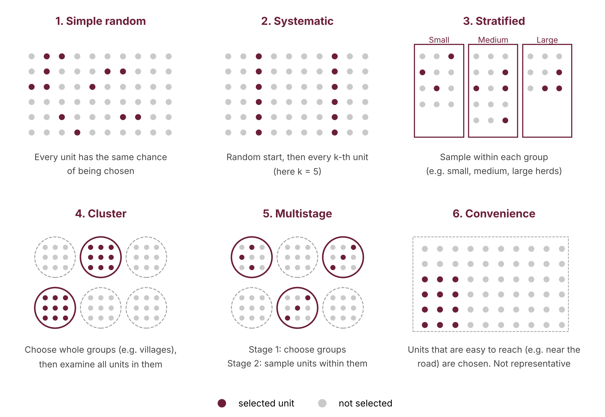

Step 6
6. Sampling method
The target population is the group you want to make conclusions about. The sampling method is how you select units from it.
6.1 Six sampling methods
| Method | How it works | Main consideration | When to use |
|---|---|---|---|
| Simple random | Randomly select units from the full list | Requires a suitable list | Small, well-listed populations |
| Systematic | Random start, then every k-th unit | Avoid patterns related to disease | Animals in a milking line, records in order |
| Stratified | Sample separately within defined groups | Account for selection fractions | Groups differ (herd size, district) |
| Cluster | Select groups, assess all or many units within them | Within-group similarity | No animal list, but a farm list exists |
| Multistage | Sample groups, then units within groups | Account for both stages | Large regional surveys |
| Convenience | Select easily available units | Limited representativeness | Pilot studies only |
